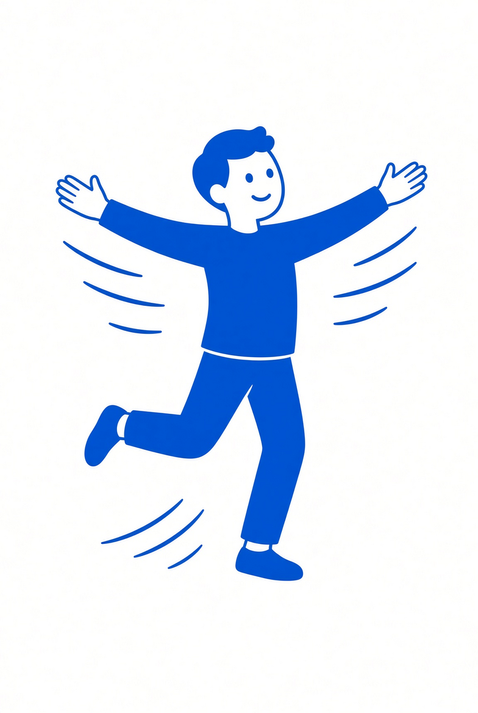
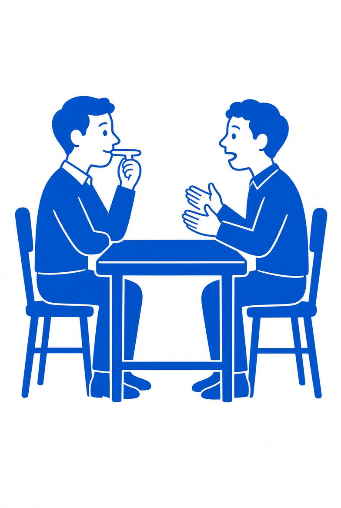
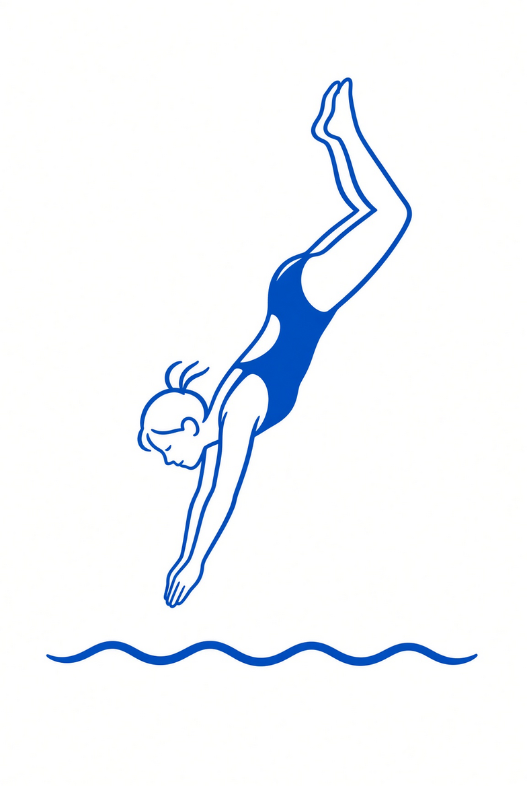
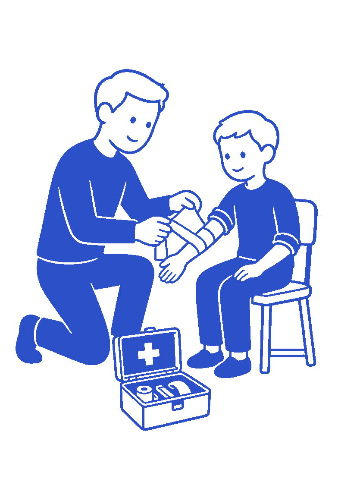
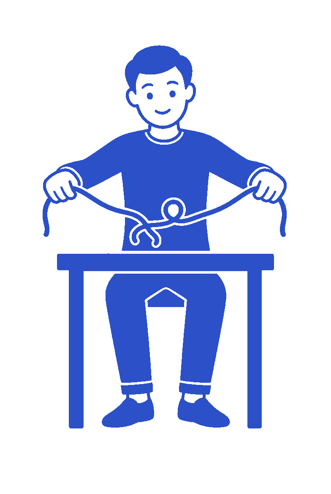
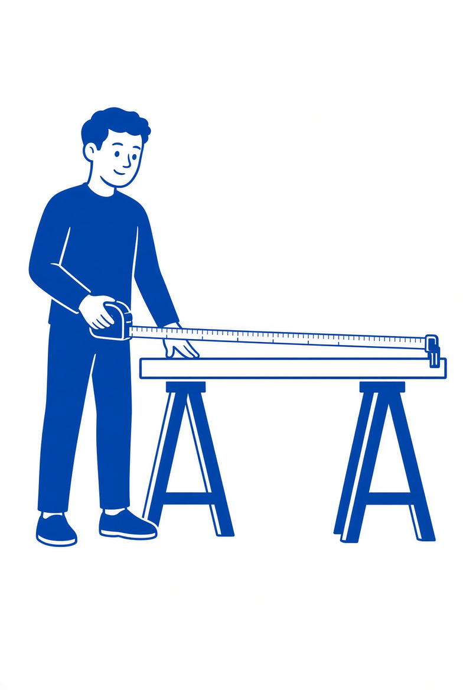
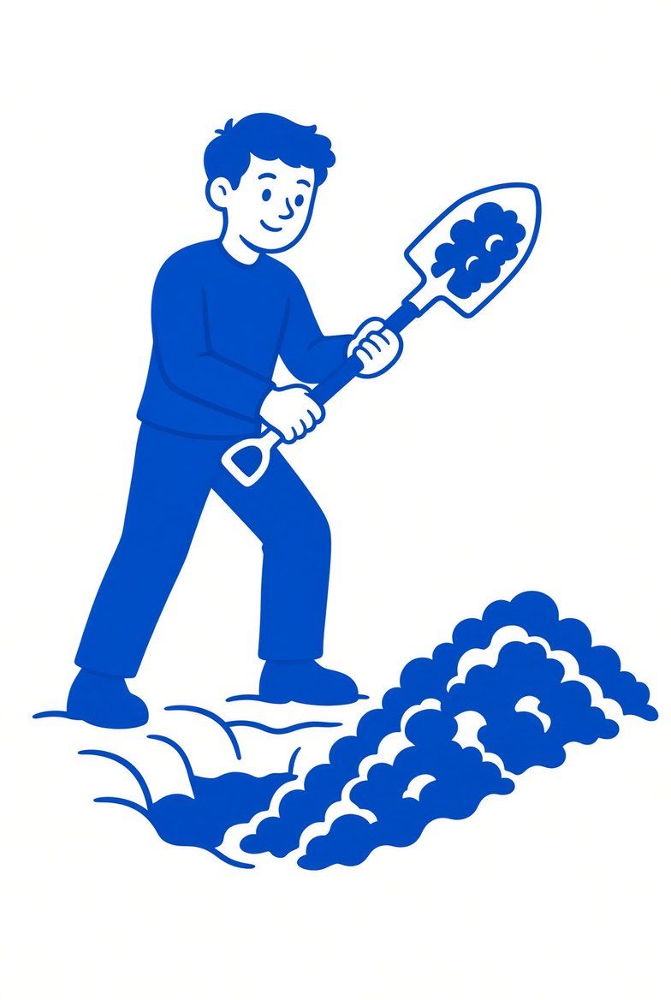
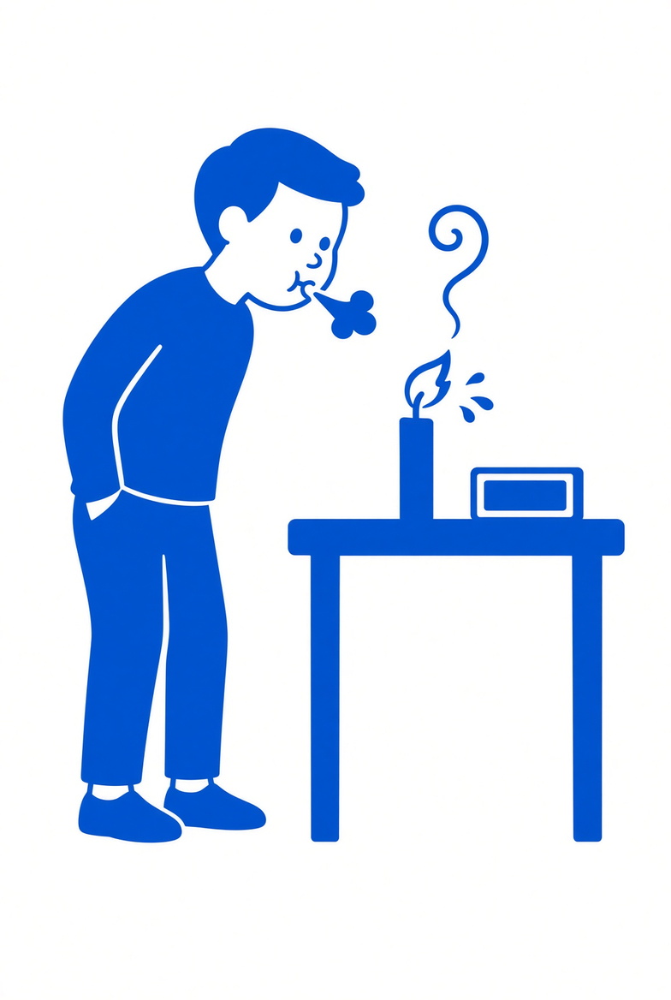
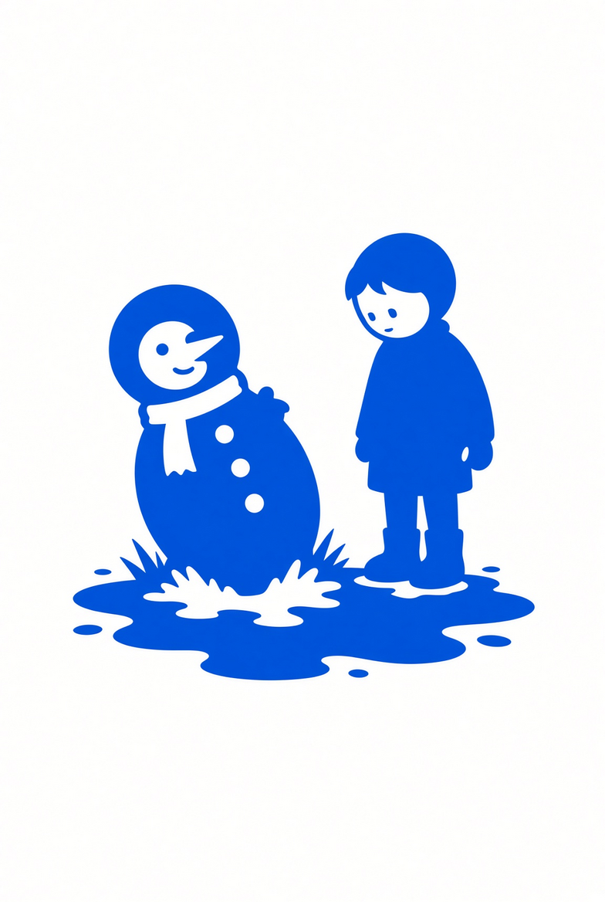
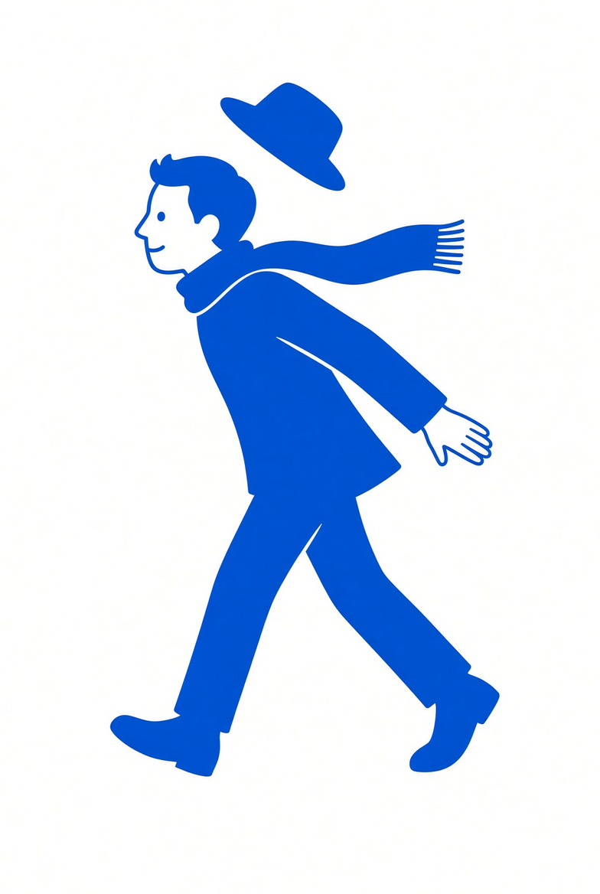

bieden
to offer
onregelmatigrang 657Money & tradegetekend
boodheeft geboden
- Scene
- one adult at a plain counter holds out one folded banknote flat on an open palm towards a shopkeeper, who stands facing them with a lamp in one hand and the other palm raised and turned down. The note is offered and not yet taken, and no till or price card is in the frame. Above the head of the CUSTOMER offering the note floats one bold solid cobalt arrow pointing straight down at the head, with a clear white gap between arrow tip and hair; it marks who performs the verb. The other person has no arrow. No text.
- Must read
- a note held out flat on an open palm towards a shopkeeper who has not taken it.
- Avoid
- a note pushed flat along the counter beside a paper bag (kopen); one hand held palm-up and empty with no note (vragen); a cardboard box passing between two people (geven); a note pressed back into the same hand (krijgen).
- Alt text
- Een volwassene houdt een opgevouwen briefje op een open handpalm naar de winkelier, die een lamp vasthoudt en de andere hand ophoudt.
- Example
- Zij bieden ons thee.
They offer us tea.
bieden.png · rang 657 · B1 onregelmatig · lexicon woorden.tsv

vervangen
to replace
onregelmatigrang 776Abstract & generalgetekend
vervingheeft vervangen
- Scene
- one adult kneels beside a bicycle and lifts a flat tyre out of the front fork with both hands, a small pump and a second tyre already on the ground beside them; the old tyre is clear of the rim and held up, and the rest of the bicycle stays whole.
- Must read
- a flat tyre held up in both hands, clear of the bicycle wheel.
- Avoid
- a pump in one hand against a bare tyre (repareren); a box carried towards a half-open door (brengen); one note offered flat on a palm (bieden); a coin and a price sign on a counter (betalen).
- Alt text
- Iemand houdt op de hurken bij een fiets een lekke band omhoog, los van het wiel.
- Example
- Ik moet de lamp vervangen.
I have to replace the lamp.
vervangen.png · rang 776 · B1 onregelmatig · lexicon woorden.tsv

begraven
to bury
onregelmatigrang 1178Abstract & generalgetekend
begroefheeft begraven
- Scene
- one adult stands beside a fresh mound of turned earth in a small garden, full figure head to feet with the feet visible, a spade in one hand with its blade on the ground, and with the other hand lays a few cut flowers flat on top of the mound. No marker, no hole, no body.
- Must read
- a fresh mound of earth with cut flowers being laid on it.
- Avoid
- a small tree pressed into a garden hole (planten); a spade lifting soil out of a trench (graven); a gravestone or any marker; three people with heads bowed; a person kneeling to look under a sofa (zoeken).
- Alt text
- Iemand staat met een schop bij een verse hoop aarde en legt er een paar bloemen op.
- Example
- De hond wil zijn bot begraven.
The dog wants to bury its bone.
begraven.png · rang 1178 · B1 onregelmatig · lexicon woorden.tsv

sterven
to die
onregelmatigrang 1269Body & healthgetekend
stierfis gestorven
- Scene
- one very old adult lies on a bed seen from the side, full figure, with both eyes closed and both hands folded on the blanket, face calm and still, mouth one short horizontal line with no upturned corners (not a smile); a plain wooden chair stands empty beside the bed on the viewer's side, between the bed and the side table, and on the side table a short candle stub with melted wax pooled at its base burns with one tiny flame.
- Must read
- an old person lying still with folded hands and a burned-down candle.
- Avoid
- both hands pressed on one chest (zijn); hands held up towards the sky beside a bed (bidden); a person asleep with a snore mark (slapen); a doctor beside a bed with a clipboard (onderzoeken); a cross or a headstone (begraven).
- Alt text
- Een heel oude mens ligt met gevouwen handen op bed; naast het bed brandt een kaarsje bijna op.
- Example
- Veel oude bomen sterven door de droogte.
Many old trees die because of the drought.
sterven.png · rang 1269 · B1 onregelmatig · lexicon woorden.tsv

bewegen
to move
onregelmatigrang 1381Movement & positiongetekend
bewoogheeft bewogen
- Scene
- one adult stands in a bare room with both arms swept out wide to the sides and one leg lifted half off the floor, caught mid-swing; short repeated curved strokes trail in the air behind the arms and behind the lifted foot and nowhere else in the frame.
- Must read
- an arm swung wide beside a foot leaving the floor.
- Avoid
- the front foot flat and the back foot just lifted, arms swinging in opposition (lopen); a person standing straight with arms along the body (staan); a body flat on a bed with eyes open (liggen); a still statue on a plinth (staan); a marching band (marcheren).
- Alt text
- Iemand staat met de armen wijd in een lege kamer, een been van de vloer, korte strepen achter de armen.
- Example
- Ik moet meer bewegen.
I need to move more.
bewegen.png · rang 1381 · B1 onregelmatig · lexicon woorden.tsv

vergelijken
to compare
onregelmatigrang 1774Thought & knowledgegetekend
vergeleekheeft vergeleken
- Scene
- one adult stands at a table between two apples that sit an arm's length apart and slowly turns the head from the left apple to the right; a hand is held above each apple, each hand horizontal with the palm facing down like a lid and the fingers pointing forward, hovering a thumb's width over its apple, not vertical and not palm-out; the two hands are held at exactly the same height above the two apples.
- Must read
- two hands held level above two separate apples.
- Avoid
- one hand hovering above one of two jars (kiezen); a face card held above a head (kennen); two pans on a balance (wegen); a person with an eye to a microscope (onderzoeken); a price tag on either apple (kopen).
- Alt text
- Een volwassene kijkt van de ene appel naar de andere en houdt beide handen op precies dezelfde hoogte erboven.
- Example
- Wij vergelijken de prijzen van twee winkels.
We compare the prices of two shops.
vergelijken.png · rang 1774 · B1 onregelmatig · lexicon woorden.tsv

zwijgen
to be silent
onregelmatigrang 2020Communication & languagegetekend
zweegheeft gezwegen
- Scene
- one adult sits at a plain table facing a second adult across it, full figure, mouth shut, with the index finger lying horizontally across both closed lips, the fingertip reaching the opposite cheek, the finger crossing the mouth and not pointing up beside the face; eyes level and steady. The other adult has an open mouth and both hands lifted, and no speech bubble touches the silent one.
- Must read
- a finger laid across closed lips at a shared table.
- Avoid
- two people close together with speech bubbles (praten); a mouth wide open and two cupped hands (roepen); a telephone held to one ear (bellen); a hand raised flat for silence (waarschuwen); a crossed-out mouth (weigeren).
- Contrast
- Pair with spreken. Same adult: a finger lies across closed lips here, the mouth is open with a bubble above the head there.
- Alt text
- Iemand legt een vinger overdwars op de lippen, terwijl de persoon aan de overkant van tafel net iets wil zeggen.
- Example
- De leerlingen zwijgen als de leraar binnenkomt.
The pupils fall silent when the teacher comes in.
zwijgen.png · rang 2020 · B1 onregelmatig · lexicon woorden.tsv

duiken
to dive
onregelmatigrang 2397Sport & gamesgetekend
dookheeft/is gedoken
- Scene
- one adult is caught just above the water of a swimming pool in an arched dive, seen from the side, full figure: the head and arms point straight down with the fingertips one hand's width above the water and not yet touching it, both knees visibly bent with the shins folded up so the feet are the highest point. The water is only a plain wavy surface line; no slab, edge, board or platform anywhere.
- Must read
- fingertips a hand's width above the water, feet highest.
- Avoid
- an arm stretched forward over the water with the head up (zwemmen); a foot on the pool ladder (stappen); a body already under the surface (zwemmen); a board under both hands (drijven); a boat with sails (varen); a springboard with a crowd (springen).
- Contrast
- Pair with zwemmen. Same pool and the same swimmer: the body arcs into the water from above here, the head is already up with one arm forward there.
- Alt text
- Een zwemmer is in een boog boven het water: de handen gaan recht naar beneden en de voeten staan hoog.
- Example
- De zwemmer duikt in het diepe water.
The swimmer dives into the deep water.
duiken.png · rang 2397 · B1 onregelmatig · lexicon woorden.tsv

verbinden
to bandage
onregelmatigrang 2534Abstract & generalgetekend
verbondheeft verbonden
- Scene
- one adult kneels beside a chair and winds a bandage twice around a child's bare forearm; the loose end of the bandage is held in the adult's fingers and the child's sleeve is rolled up. A first aid box lies open on the floor between them.
- Must read
- a bandage being wound around a child's bare forearm.
- Avoid
- an adult pushing a pram along the pavement (wandelen); a spoon held to a patient's mouth (voeren); a doctor tapping a knee with a hammer (onderzoeken); two ropes knotted together (binden).
- Alt text
- Een volwassene zit geknield naast een kind en wikkelt een wit verband om de onderarm.
- Example
- De dokter verbindt mijn gewonde hand.
The doctor bandages my injured hand.
verbinden.png · rang 2534 · B1 onregelmatig · lexicon woorden.tsv

scheiden
to separate
onregelmatigrang 2649People & relationsgetekend
scheiddeheeft/is gescheiden
- Scene
- One adult sits at a plain table and pulls two tangled cords apart, one cord in each hand, the hands moving away from each other; the last loop is just slipping free in the middle. Nothing else is on the table.
- Must read
- two cords pulled apart in two hands, the last loop slipping free.
- Avoid
- a sheet of paper torn in two (scheuren); two hands tying a knot (knopen); a rope pulled tight between two people (trekken); two rings side by side (trouwen); scissors through a cord (knippen).
- Alt text
- Iemand trekt aan een tafel twee verwarde snoeren uit elkaar, in elke hand één.
- Example
- Wij scheiden het afval in drie bakken.
We separate the waste into three bins.
scheiden.png · rang 2649 · B1 onregelmatig · lexicon woorden.tsv

jagen
to hunt
onregelmatigrang 2709Animalsgetekend
jaagde / joegheeft gejaagd
- Scene
- a cat crouches low in grass, body stretched and tail straight, eyes fixed on a mouse a short way ahead; one front paw is lifted mid-step. No person in the picture.
- Must read
- a crouching cat with its eyes fixed on a mouse.
- Avoid
- a cat asleep on a cushion (slapen); a dog on a lead beside an adult (uitlaten); a cat running with nothing ahead (rennen); a mouse already in the cat's mouth; a rifle.
- Alt text
- Een kat sluipt laag door het gras met de ogen strak op een muis.
- Example
- De vos jaagt 's nachts op muizen.
The fox hunts mice at night.
jagen.png · rang 2709 · B1 onregelmatig · lexicon woorden.tsv

meten
to measure
onregelmatigrang 2873Quantity & measuregetekend
matheeft gemeten
- Scene
- one adult stands at the end of a long plank and pulls a tape measure out along it; the hook is fixed on the plank end and the thin metal band, marked only with plain tick marks, is drawn taut, the free hand holding the case at eye level with the eyes on the marks. The room is otherwise empty. A long plank lies flat on two trestles at waist height and the person stands beside it on the ground; the tape's hook is clamped over the near plank end and the thin band lies straight and taut along the plank's top surface from that end; the free hand holds the tape case at eye level. The person holds the tape case in the near hand at the plank's near end, with the thin band running continuously from the case to a hook at the far end; no separate marks and no floating case.
- Must read
- a taut tape measure drawn out along a plank.
- Avoid
- a hand held up with fingers spread at arm’s length (schatten); a wall clock; a balance with two pans (wegen); a ruler laid on a sheet of paper (tekenen); a weighing scale with a dial.
- Alt text
- Een volwassene trekt een rolmaat uit langs een plank en kijkt naar de streepjes.
- Example
- De arts meet mijn bloeddruk.
The doctor measures my blood pressure.
meten.png · rang 2873 · B1 onregelmatig · lexicon woorden.tsv

graven
to dig
onregelmatigrang 3000Movement & positiongetekend
groefheeft gegraven
- Scene
- one adult stands in a garden and lifts a spade loaded with clods out of a shallow trench, the turned earth thrown up in a long mound beside it.
- Must read
- a spade lifted out of the earth with a load of soil.
- Avoid
- a hand pushing a small tree down into a hole (planten); a person at a laptop at a desk (werken); a child pressing a toy spade into sand (spelen); a spade by a fresh mound with flowers on it (begraven); a machine (bouwen).
- Alt text
- Iemand in een tuin trekt de schop vol kluiten aarde uit een sleuf, met een hoop omgewoelde grond ernaast.
- Example
- De kinderen graven een gat in het zand.
The children dig a hole in the sand.
graven.png · rang 3000 · B1 onregelmatig · lexicon woorden.tsv

blazen
to blow
onregelmatigrang 3140Abstract & generalgetekend
bliesheeft geblazen
- Scene
- One adult stands at a plain table and blows out a single candle, the lips a hand-width from the flame and pursed, the cheeks puffed, the flame bent sharply sideways and halfway out; a closed matchbox lies on the table and one thin curl of smoke rises.
- Must read
- a pursed mouth beside a candle flame bent over and nearly out.
- Avoid
- a pair of open lips shaping a long word (spreken); a hand waving beside the candle with the lips closed (zwaaien); a mouth on the rim of a full glass (drinken); a match struck against a box.
- Alt text
- Een volwassene heeft de lippen vlak bij een kaars; de vlam buigt opzij en dooft bijna uit.
- Example
- De jongen blaast de kaarsjes uit.
The boy blows out the candles.
blazen.png · rang 3140 · B1 onregelmatig · lexicon woorden.tsv

schrikken
to be frightened
onregelmatigrang 3490Emotion & feelinggetekend
schrokis geschrokken
- Scene
- One adult stands by a plain table and jerks backwards away from a fallen steel pan, both hands flung up at shoulder height, eyes wide, mouth open, one heel lifted off the floor; the pan lies on its side on the floor and its lid is rolling.
- Must read
- a person flinching backwards from a clattering pan, both hands up.
- Avoid
- two adults facing each other with one open mouth (spreken); a person leaning over a laptop at a desk (werken); a shoulder wedged into a queue (dringen); a person asleep in a bed (slapen).
- Alt text
- Iemand schiet achteruit weg van een gevallen pan, handen omhoog en ogen wijd.
- Example
- Ik schrik van de harde knal.
I am startled by the loud bang.
schrikken.png · rang 3490 · B1 onregelmatig · lexicon woorden.tsv

kruipen
to crawl
onregelmatigrang 3727Abstract & generalgetekend
kroopheeft/is gekropen
- Scene
- One adult moves on all fours over bare floor beside a low tunnel opening, the knees and both hands on the ground, the back level and low, one knee just lifted forward; the head is kept down below the tunnel's top edge, and the tunnel mouth is close in front.
- Must read
- a low body on hands and knees moving forward into a tunnel.
- Avoid
- a toddler balanced on two feet mid-step (lopen); a body flat on its back on a bed (liggen); a body hanging on a rope against a wall (klimmen); a person standing bent over at the waist.
- Alt text
- Een volwassene gaat op handen en knieën laag over de vloer naar een kleine tunnel.
- Example
- De baby kruipt over de vloer.
The baby crawls across the floor.
kruipen.png · rang 3727 · B1 onregelmatig · lexicon woorden.tsv

buigen
to bend
onregelmatigrang 4144Movement & positiongetekend
boogheeft gebogen
- Scene
- one adult stands with one foot on a low block and presses a long thin metal rod over the raised knee with both hands, the rod curved into a clear arc but unbroken; the eyes are on the curve.
- Must read
- a rod curved into an unbroken arc between two hands.
- Avoid
- a wooden lath snapping with splinters in the air (breken); a person bowing from the waist (groeten); a rope pulled tight between two hands (trekken); a rod lying straight on the floor.
- Alt text
- Iemand drukt een lange dunne staaf over de knie; de staaf staat krom maar knapt niet.
- Example
- Ik kan mijn knie na de val niet buigen.
I cannot bend my knee after the fall.
buigen.png · rang 4144 · B1 onregelmatig · lexicon woorden.tsv

smelten
to melt
onregelmatigrang 5357Nature & weathergetekend
smoltheeft/is gesmolten
- Scene
- a snowman stands on a patch of grass under a bright sun, leaning to one side, its head half sunk into the body and a pool of water spreading round its base; one child stands beside it looking down at the puddle.
- Must read
- a snowman sagging into a pool of water.
- Avoid
- fat in a pan on a stove (bakken); a frozen pond (bevriezen); ice cubes in a cup (koud); water poured from a jug (gieten).
- Alt text
- Een sneeuwpop zakt scheef in elkaar in de zon; om de voet ligt een plas water.
- Example
- De sneeuw smelt in de zon.
The snow melts in the sun.
smelten.png · rang 5357 · B1 onregelmatig · lexicon woorden.tsv

vouwen
to fold
onregelmatigrang 7773House & homegetekend
vouwdeheeft gevouwen
- Scene
- two plain white hands hold a single rectangular sheet of paper in the middle of the picture, folded in half, with the fold line running clearly along the middle of the sheet and the two halves lying flat against each other; the hands pinch the folded edge; nothing else in the picture, no table, no other objects.
- Must read
- a sheet of paper folded in half between two hands.
- Avoid
- a shirt hanging on a line; a parcel wrapped in paper (verpakken); paper torn in two (scheuren); a person pulling on a shirt (aankleden).
- Alt text
- Twee handen klappen een vel papier dubbel.
- Example
- Kun je de handdoeken vouwen en in de kast leggen?
Can you fold the towels and put them in the cupboard?
vouwen.png · rang 7773 · B1 onregelmatig · lexicon woorden.tsv

waaien
to blow (wind)
onregelmatigrang 7791Nature & weathergetekend
waaide / woeiheeft gewaaid
- Scene
- one adult walks along an open path bent into the wind, one hand reaching back too late as a hat lifts off the head and flies away behind; the coat and scarf stream back in the same direction. Nothing else is in the picture: no tree, no washing line.
- Must read
- a hat lifting off a head and flying away behind.
- Avoid
- a person blowing out candles (blazen); leaves dropping from a tree (vallen); a person running after a ball (rennen); a tree bending with towels flapping on a line (winderig).
- Alt text
- Iemand loopt voorovergebogen over een pad; de hoed vliegt van het hoofd en de sjaal wappert naar achteren.
- Example
- Het waait hard aan de kust.
It is blowing hard on the coast.
waaien.png · rang 7791 · B1 onregelmatig · lexicon woorden.tsv